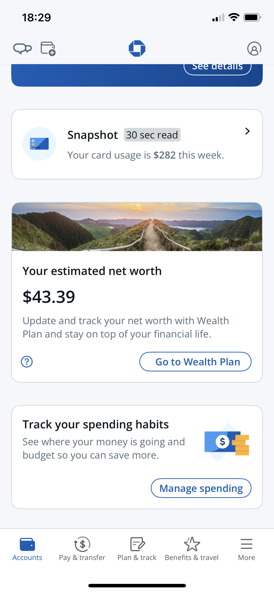
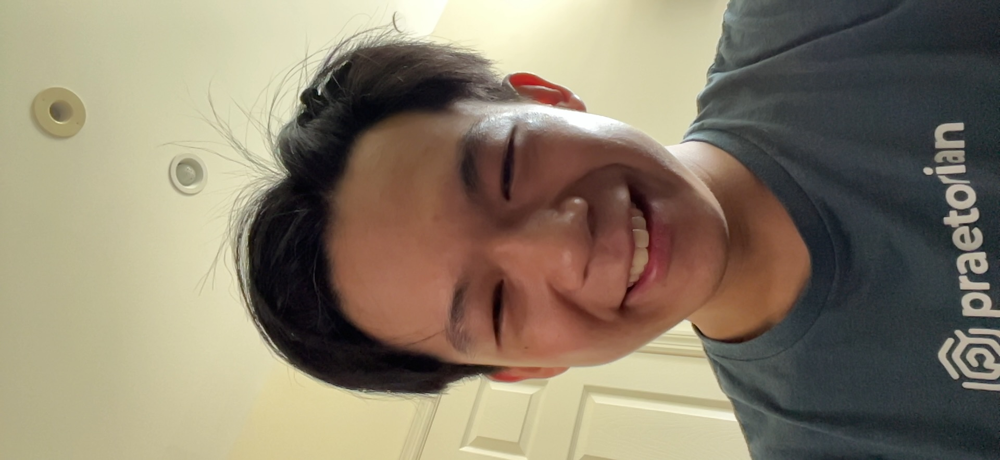
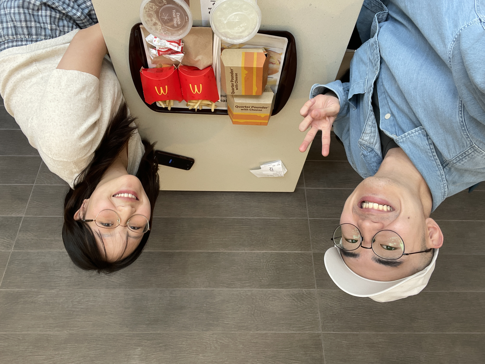
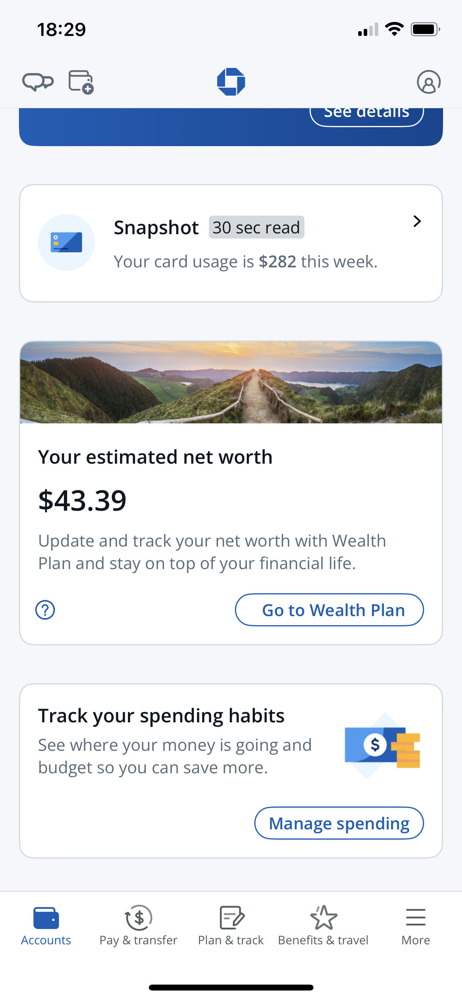
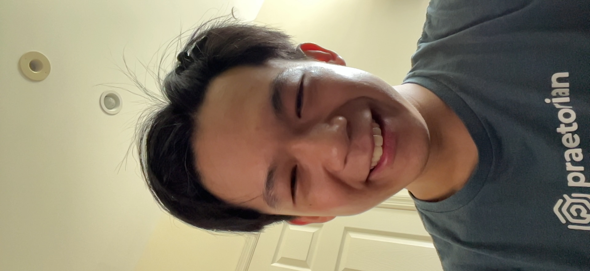
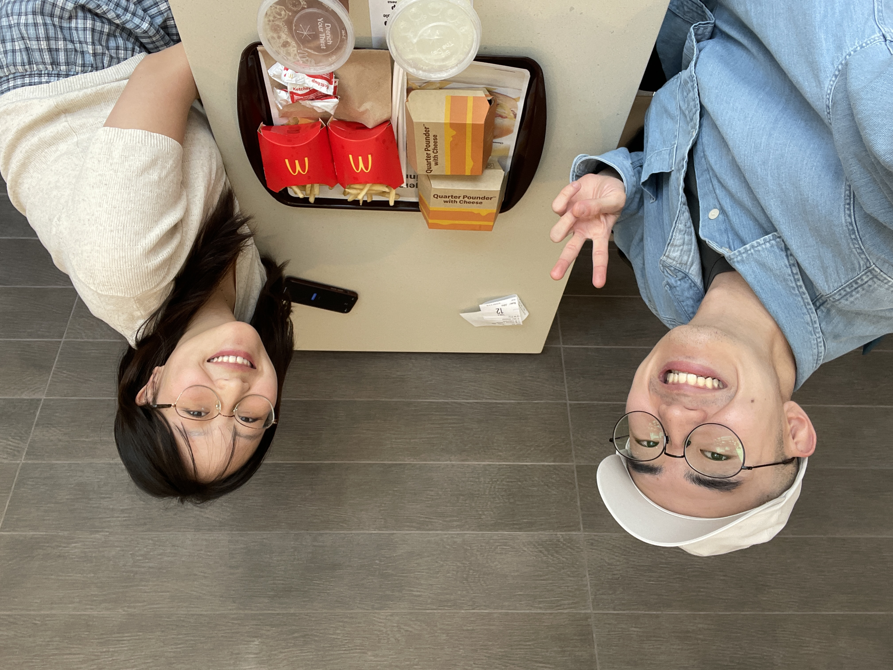
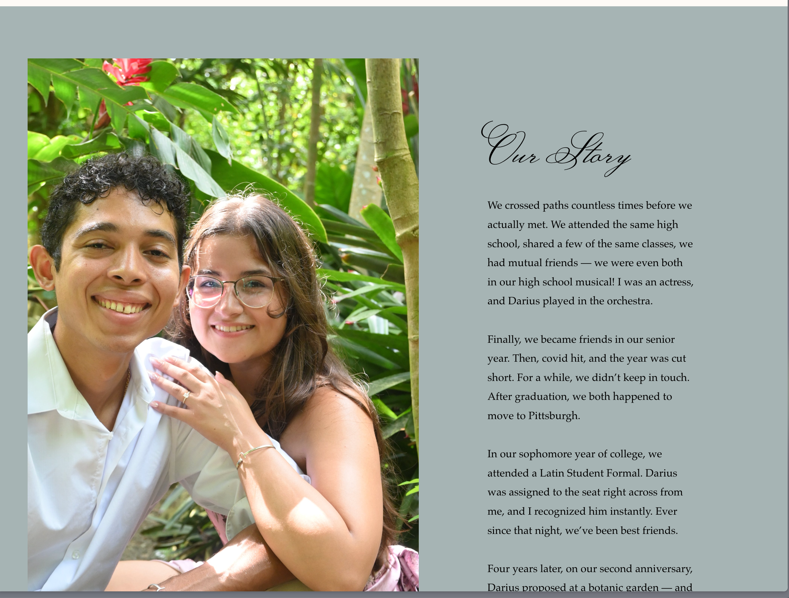
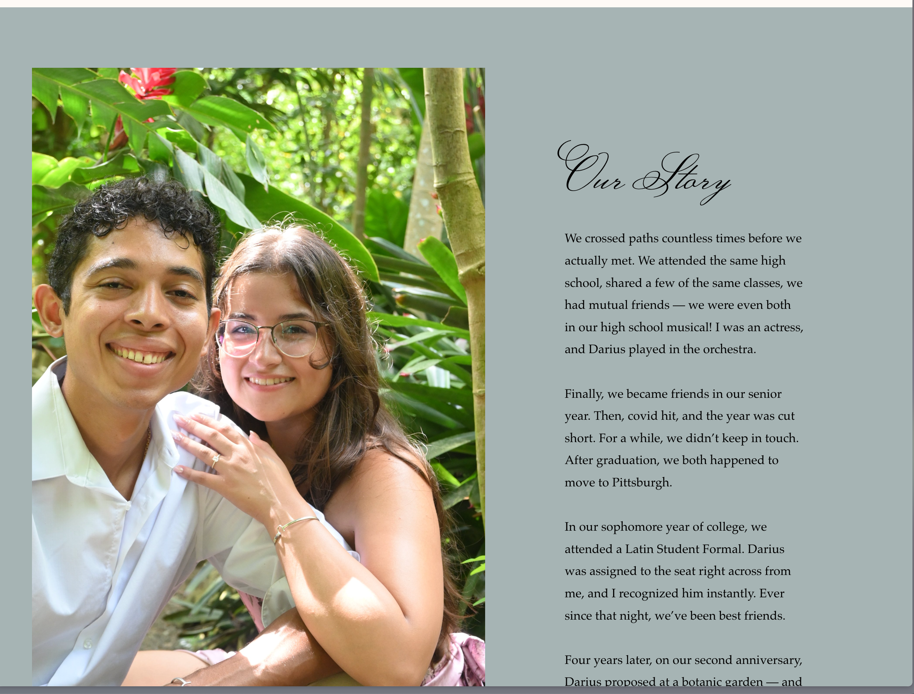

Ongoing Journey - July 2025
Thoughts
What’s the similarity between park, school, and cemetery - no one will be there after 8pm
Recently started going for walks before late night calls, very quiet and peaceful in all three places
大三大四难受的点是，你察觉到你长大了，但是你不知道往哪里跑
via Crystal, a similar spike of anexity I felt at Senior year of high school / college, and for each instance, the anexity only bloomed bigger without ever fading away
The more you show off an attribute, the more likly it would be altered towards the public’s liking
想到恋爱博主，跑步博主，粉丝越多表演性质就越大，自己喜欢的事情低调一些更好
Fun app idea - scrap posts from one social media and let the user guess how many likes / what the comment section would be like in another social media
Medias I get to see are much more polarized now, only the strongest opnions would get attentions with algorithms
In the end, family will be the only one that support you
via Sherry. They say finding partners is esentially choosing your famiy, I have yet to figure out what the definition of family
Small trick in life - If heading to a grocery store hungry & carrying a basket, put two bottles of water first. The weight of water often offsets my desire to get more food
If you do exactly what you have in your JD, you will always be the same employee.
Most of the conversation on sunken cost focuses on the cost part, to me the offset of expectations is more intriging.
If you adjust the expectations, it’s easier to get over the barrier of ‘sunken’ part.
PhD is about diving deep, your job is about flying up to higher platforms
via Xiaohan on academia and industry, both requires curiocity.
Photos
 morning at cemetery, not many folks are there as expected, very nice and quiet
morning at cemetery, not many folks are there as expected, very nice and quiet
 pot plants left for me by my manager - wish you a speedy recovery Irean
pot plants left for me by my manager - wish you a speedy recovery Irean
 Nintendo Switch 2 release + new shop opened in SF, such an ethusastic community
$43 net worth woo 🥳
Ant with his career fair shirt, was great chatting :D

Nintendo Switch 2 release + new shop opened in SF, such an ethusastic community
$43 net worth woo 🥳
Ant with his career fair shirt, was great chatting :D

 Cute matching couple
and... CONGRATS JULIANNAAAA
Cute matching couple
and... CONGRATS JULIANNAAAA